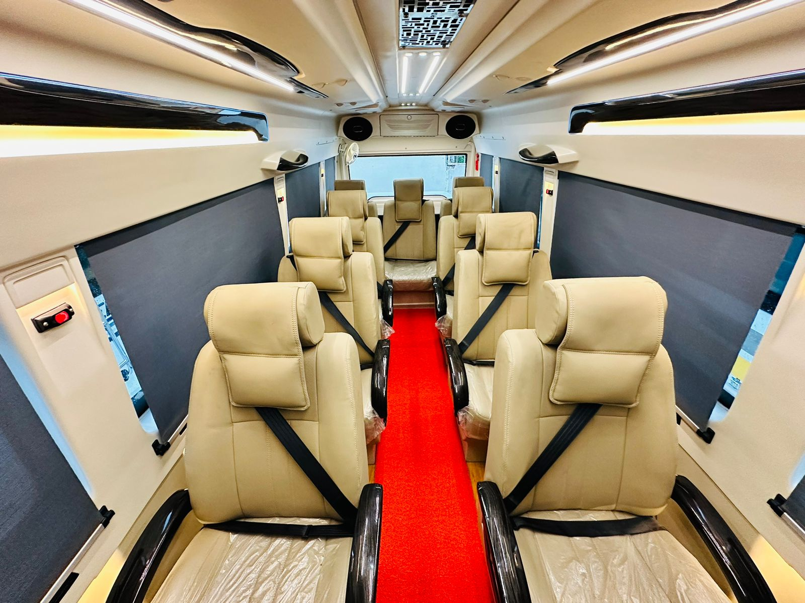
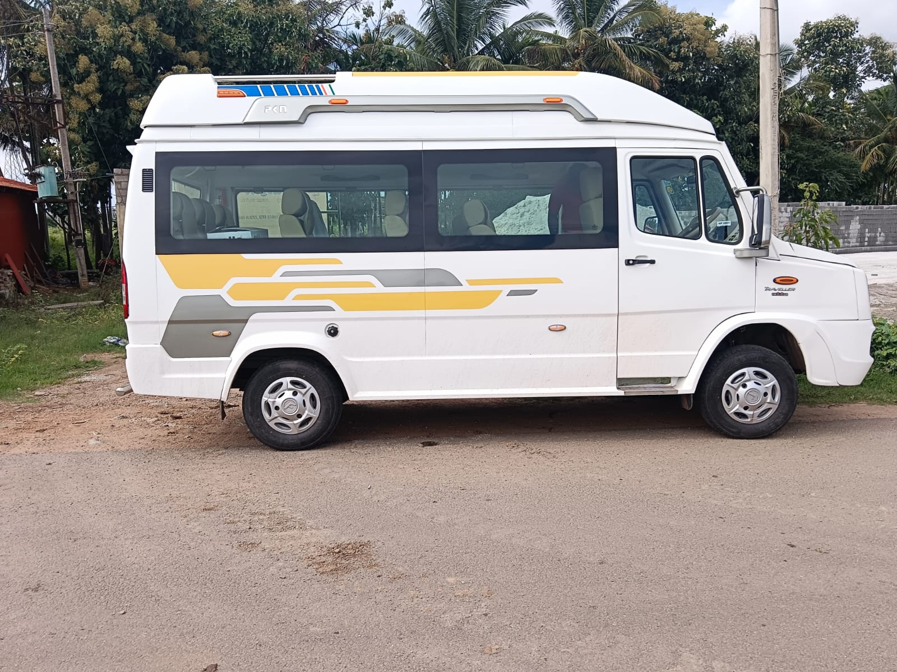
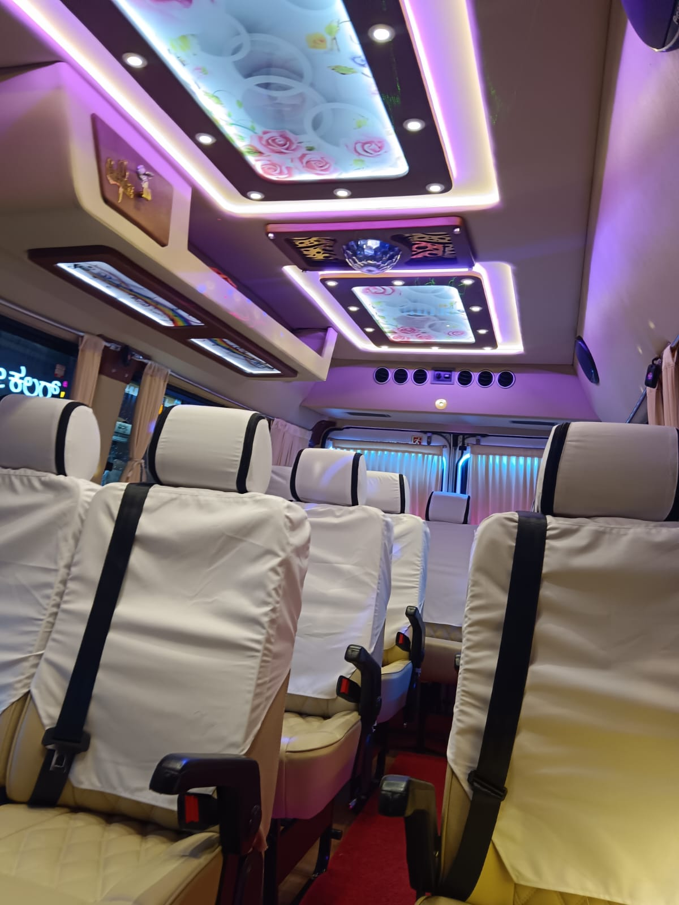
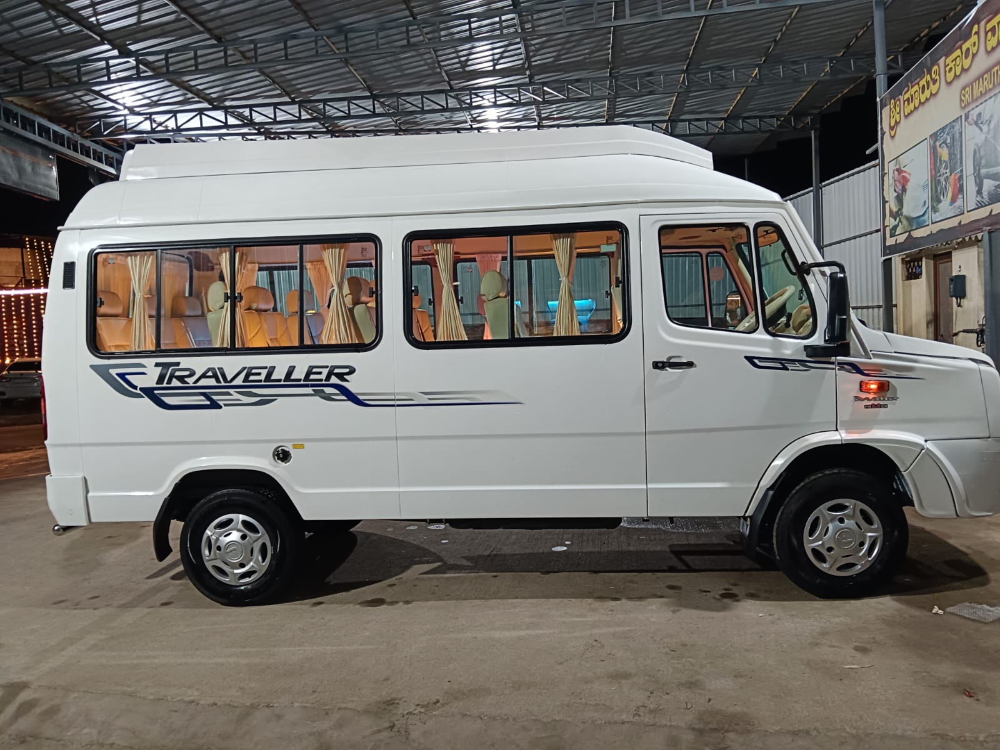
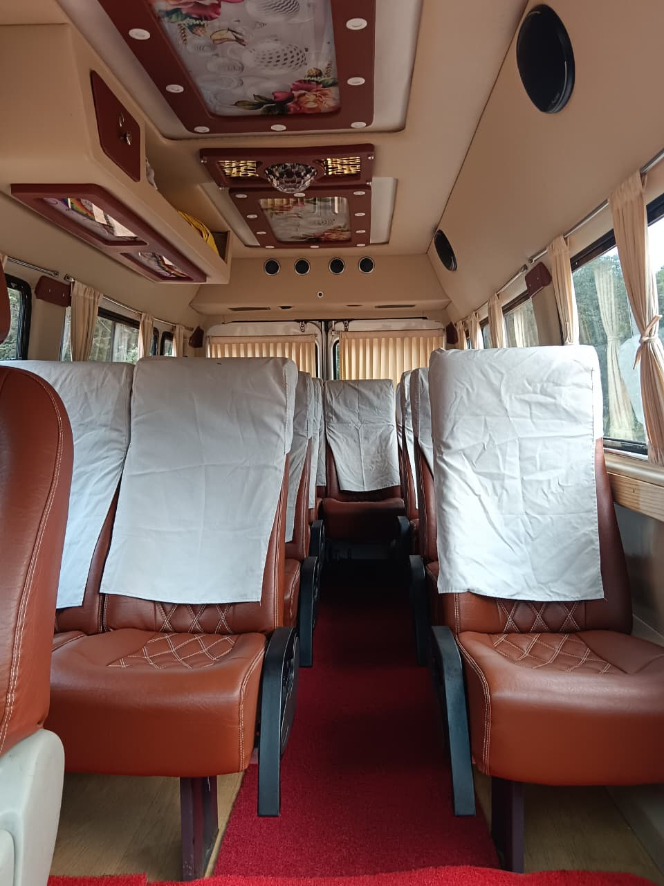

Tempo Traveller
Spacious Travel for Every Group.
The Tempo Traveller is India's most trusted group-travel vehicle, a spacious, high-roof coach engineered to move larger groups reliably and affordably over long distances. Its proven, rugged build handles ghat roads, highways, and long touring days with ease.
With wide push-back seating, generous headroom, big windows, and a powerful air-conditioning system, the Tempo Traveller is the go-to choice for corporate outings, temple and pilgrimage tours, wedding-party logistics, school and college trips, and extended outstation holidays to Coorg, Chikmagalur, Gokarna and beyond.
Every RYDEXS Tempo Traveller is regularly serviced, fully air-conditioned, and driven by professional, route-experienced chauffeurs, so your group simply sits back and enjoys the ride.
Key Specifications.
Everything that makes the Tempo Traveller a benchmark for reliable group mobility.
Comfort In Every Detail.
The Tempo Traveller is loaded with amenities that keep long journeys relaxed and enjoyable for the whole group.
- Push-Back Seats: Wide, cushioned push-back seats with generous legroom keep every passenger comfortable on long touring days.
- Powerful Roof AC: A high-capacity roof-mounted AC cools the full cabin evenly, even in peak summer and heavy traffic.
- Ample Luggage Space: A dedicated rear boot plus overhead cabins comfortably swallow suitcases for the whole travelling group.
- USB & Charging Points: Multiple charging outlets keep phones, cameras and laptops powered on the move.
- Safety First: ABS, driver airbag, sturdy body structure and seat belts across the cabin, with GPS-tracked vehicles.
- Quiet, Refined Cabin: Superior insulation and a smooth ride let conversation and music flow, no shouting over road noise.
Seating Options.
Pick the layout that fits your group. All variants are fully AC with premium seating.
Tempo 12-Seater
Extra legroom and lounge-style spacing, ideal for smaller groups and comfortable weekend getaways.
- Passengers12 + Driver
- LayoutPush-Back Rows
- Best forSmall Groups
- LuggageGenerous
Tempo 17-Seater
The sweet spot of comfort and capacity, the go-to for group tours, offsites and pilgrimages.
- Passengers17 + Driver
- LayoutPush-Back Rows
- Best forTours / Offsites
- LuggageAmple
Tempo 26-Seater
Maximum seats for the largest groups, best value when the whole team needs to travel together.
- Passengers26 + Driver
- Layout3+2 Seating
- Best forLarge Groups
- LuggageBoot + Overhead
Tempo Traveller Rates.
Indicative rates based on an 8 hours / 80 kms local package from Bengaluru, with clear add-ons for extra time, distance and outstation trips. Contact us for a firm, itinerary-based quote.
← Swipe to see all columns →
| Vehicle | 8 Hrs / 80 Kms | Extra Hr | Per Km | Outstation / Km | Driver Bata |
|---|---|---|---|---|---|
| Tempo Traveller 9 Seater9+1 · 1+1 Layout | ₹5,000 | ₹500 | ₹27 | ₹28 | ₹600 |
| Tempo Traveller Non-AC/AC 12 Seater12+1 · 2+1 Layout | ₹3,800 | ₹450 | ₹17 | ₹18 | ₹500 |
| Tempo Traveller AC 12 Seater12+1 · 2+1 Layout | ₹4,500 | ₹500 | ₹20 | ₹21 | ₹500 |
| Tempo Traveller AC 12 Seater12+1 · 1+1 Layout | ₹7,000 | ₹750 | ₹28 | ₹30 | ₹600 |
Note: All rates are indicative and based on an 8 hours / 80 kms local package. Extra Hr and Per Km charges apply beyond the package limit. Outstation rates are charged per kilometre, and Driver Bata (daily allowance) is additional. Toll, parking, state permits, and GST are charged as applicable. Contact us for a customised quote on your route.
See The Tempo Traveller.





Ready To Book The Tempo Traveller?
Tell us your route, dates and group size, and we'll match you with the right Tempo Traveller and a firm quote within the hour.